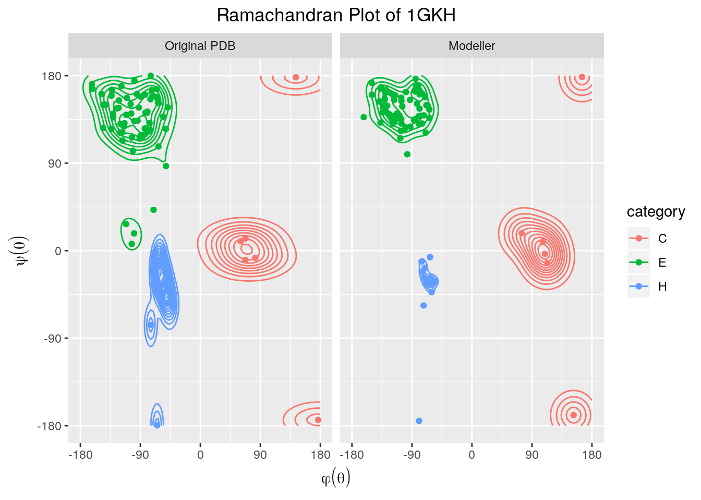
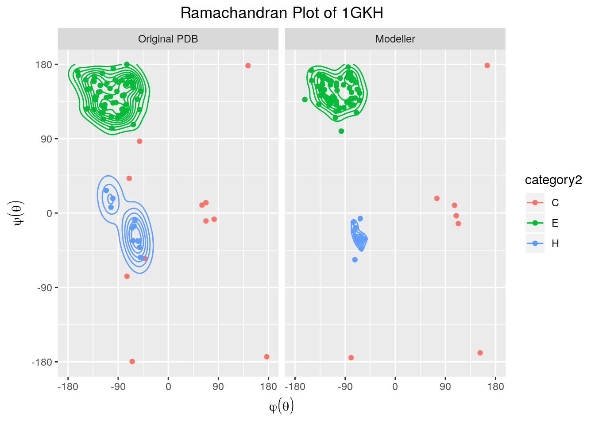

El sigueinte nivel de complejidad es aquel que viene descrito por la representación de las proteínas en el espacio tridimensional. Para continuar indagando sobre la estructura protéica y su modelado se exploró algunos integrantes de la familia de métodos de Fold Recognition (FR), que como dice su nombre, tienen por objeto reconocer el plegamiento que debe asignarsele a una secuencia protéica.
HHpread es un método de búsqueda de secuencias y predicción de estructura; mucho más sensible para encontrar homólogos remotos, emplea alineamientos de secuencia-perfil o perfil-perfil, los cuales contienen por cada columna de un alineamiento múltiple las frecuencias de los 20 aminoácidos, los cuales guardan valiosa información sobre la conservación de cada posición.[1]
Para nuestra porteína de interés se escogieron dos “moldes” que servirán de guía para modelar la estructura protéica. Una vez realizado el alineamiento se procedió a usar Modeller[2] para hacer un modelado de la estructura terciaria de nuestra proteína.
Figure 1. Tertiary structure of 1 GKH predicted with Modeller.
head -n 10 ./data/P1_Modeller.pdbEXPDTA THEORETICAL MODEL, MODELLER 9.21 2019/01/31 17:33:11
REMARK 6 MODELLER OBJECTIVE FUNCTION: 1306.2444
REMARK 6 MODELLER BEST TEMPLATE % SEQ ID: 98.837
REMARK 6 SEQUENCE: 3099289
REMARK 6 ALIGNMENT: alignment.pir
REMARK 6 SCRIPT: modeller_script.py
REMARK 6 TEMPLATE: 1PFS 2:A - 70:A MODELS 1:X - 80:X AT 20.3%
REMARK 6 TEMPLATE: 1GVP 1:A - 86:A MODELS 1:X - 86:X AT 98.8%
ATOM 1 N MET X 1 5.800 23.500 6.882 1.00 78.71 N
ATOM 2 CA MET X 1 4.847 22.563 6.239 1.00 78.71 Cextract_angles_of_pdb.pl procesa un archivo en formato PDB (Protein Data Bank)[2] para obtener los ángulos diédros (\(\phi\), \(\psi\) y \(\omega\)) de cada residuo protéico y de esta forma porder representarlos en un diagrama de Ramachandran y clasificar los aminoácidos según su localiación en el gráfico.
Mostrar código
#!/usr/bin/perl -w
# prog2.2 calcula los angulos diedros de una proteina en formato PDB
# Bruno Contreras-Moreira, adaptado de http://praveenvijay.netfirms.com/scripts.htm#backbone
use strict;
use Math::Trig;
my ($PDBfile,@coordenadas,@atomo,@residuo,@cadena,@res_id,@x,@y,@z);
my ($total,$j,$i) = (0,1);
if(!$ARGV[0]){ die "# usage: $0 <PDB file>\n"; }
else{ $PDBfile = $ARGV[0] }
## 1) lee coordenadas atomicas en formato PDB
open(PDB,$PDBfile)|| die "# $0 : no puedo leer $PDBfile\n";
while(<PDB>)
{
last if(/^ENDMDL/); # para estructuras NMR como 1lfu, TER es otra opcion
next if not(/^ATOM\s+\d+\s+(?:N|CA|C)\s+/);
push(@coordenadas,$_);
}
close(PDB);
## 2) recorre secuencia buscando atomos N,CA,C consecutivos
for $i (0..$#coordenadas-2)
{
#ATOM 2231 N ALA P 78 -14.689 7.253 -23.476
$residuo[$j] = substr($coordenadas[$i],17,3);
$cadena[$j] = substr($coordenadas[$i],21,1);
$res_id[$j] = substr($coordenadas[$i],23,3);
$atomo[$j] = substr($coordenadas[$i],12,4);
$atomo[$j+1] = substr($coordenadas[$i+1],12,4);
$atomo[$j+2] = substr($coordenadas[$i+2],12,4);
if($atomo[$j] eq ' N ' && $atomo[$j+1] eq ' CA ' && $atomo[$j+2] eq ' C ')
{
$x[$j]{'N'} = substr($coordenadas[$i],30,8);
$y[$j]{'N'} = substr($coordenadas[$i],38,8);
$z[$j]{'N'} = substr($coordenadas[$i],46,8);
$x[$j]{'CA'} = substr($coordenadas[$i+1],30,8);
$y[$j]{'CA'} = substr($coordenadas[$i+1],38,8);
$z[$j]{'CA'} = substr($coordenadas[$i+1],46,8);
$x[$j]{'C'} = substr($coordenadas[$i+2],30,8);
$y[$j]{'C'} = substr($coordenadas[$i+2],38,8);
$z[$j]{'C'} = substr($coordenadas[$i+2],46,8);
$j++;
$total++;
}
}
print "# $0 : fichero PDB: $PDBfile ($total residuos)\n";
## 3) calcula e imprime angulos diedros
print "num\tresiduo\tphi\tpsi\tomega\n";
for $j (2..$total-1)
{
my ($x1,$y1,$z1,$x2,$y2,$z2,$x3,$y3,$z3,$x4,$y4,$z4,$x5,$y5,$z5,$x6,$y6,$z6); # puntos
my (@v1,@v2,@v3,@v4,@v5,@v6,@v7,@v8); # vectores directores
my ($phi,$psi,$omega) = (-9999,-9999,-9999); # valores nulos por defecto
# toma atomos en residuos j-1,j y j+1 para definir planos y calcular angulos diedros
($x1,$y1,$z1) = ( $x[$j-1]{'C'} , $y[$j-1]{'C'} , $z[$j-1]{'C'} );
($x2,$y2,$z2) = ( $x[$j]{'N'} , $y[$j]{'N'} , $z[$j]{'N'} ); # Cj-1 - Nj
($x3,$y3,$z3) = ( $x[$j]{'CA'} , $y[$j]{'CA'} , $z[$j]{'CA'} ); # \
($x4,$y4,$z4) = ( $x[$j]{'C'} , $y[$j]{'C'} , $z[$j]{'C'} ); # CAj - Cj
($x5,$y5,$z5) = ( $x[$j+1]{'N'} , $y[$j+1]{'N'} , $z[$j+1]{'N'} ); # \
($x6,$y6,$z6) = ( $x[$j+1]{'CA'}, $y[$j+1]{'CA'}, $z[$j+1]{'CA'} );# Nj+1 - CAj+1
@v1 = ( $x2-$x1 , $y2-$y1 , $z2-$z1 ); # plano definido por Cj-1, Nj and CAj (para medir phi)
@v2 = ( $x3-$x1 , $y3-$y1 , $z3-$z1 );
@v3 = ( $x3-$x2 , $y3-$y2 , $z3-$z2 ); # plano Nj, CAj and Cj (para medir phi y psi)
@v4 = ( $x4-$x2 , $y4-$y2 , $z4-$z2 );
@v5 = ( $x4-$x3 , $y4-$y3 , $z4-$z3 ); # plano CAj, Cj and Nj+1 (para medir psi)
@v6 = ( $x5-$x3 , $y5-$y3 , $z5-$z3 );
@v7 = ( $x5-$x4 , $y5-$y4 , $z5-$z4 ); # plano Cj, Nj+1 and CAj+1 (para medir psi y omega)
@v8 = ( $x6-$x4 , $y6-$y4 , $z6-$z4 );
$phi = angulo_diedro( @v1, @v2, @v3, @v4, $x3, $y3, $z3, $x2, $y2, $z2 ); # entre Nj y CAj (2Cs)
$psi = angulo_diedro( @v3, @v4, @v5, @v6, $x4, $y4, $z4, $x3, $y3, $z3 ); # entre CAj y Cj (2Ns)
$omega = angulo_diedro( @v5, @v6, @v7, @v8, $x5, $y5, $z5, $x4, $y4, $z4 );# entre Nj+1 y Cj (2CAs)
print join("\t",($res_id[$j],join(" ",$residuo[$j],$cadena[$j]),$phi,$psi,$omega)) . "\n";
#printf("%4d
# %3s %s %8.1f %8.1f %8.1f\n",$res_id[$j],$residuo[$j],$cadena[$j],$phi,$psi,$omega);
}
#print "# residuo phi psi omega\n";
sub angulo_diedro
{
my (@p) = @_; #parametros ( v_plano1,v_plano2, v_plano3, v_plano4, enlace1, enlace2 )
my (@v1,@v2,$modulo1,$modulo2,$prod_escalar,@normal,$cos,$ang,$signo);
## 1) determina el angulo entre ambos planos
# calcula vector perpendicular a cada plano por producto vectorial
@v1 = ( ($p[1]*$p[5])-($p[2]*$p[4]) , ($p[2]*$p[3])-($p[0]*$p[5]) , ($p[0]*$p[4])-($p[3]*$p[1]) );
@v2 = ( ($p[7]*$p[11])-($p[8]*$p[10]) , ($p[8]*$p[9])-($p[6]*$p[11]) , ($p[6]*$p[10])-($p[9]*$p[7]) );
# calcula producto escalar de vectores perpendiculares para estimar cos(angulo)
$prod_escalar = ($v1[0]*$v2[0]+$v1[1]*$v2[1]+$v1[2]*$v2[2]);
$modulo1 = ((($v1[0]*$v1[0])+($v1[1]*$v1[1])+($v1[2]*$v1[2]))**0.5);
$modulo2 = ((($v2[0]*$v2[0])+($v2[1]*$v2[1])+($v2[2]*$v2[2]))**0.5);
$cos = ($prod_escalar/($modulo1*$modulo2));
$ang = (Math::Trig::acos($cos))/(Math::Trig::pi/180);
## 2) determina el signo del angulo diedro
# calcula vector normal a ambos vectores perpendiculares por producto vectorial
@normal = ( ($v1[1]*$v2[2])-($v1[2]*$v2[1]) , ($v1[2]*$v2[0])-($v1[0]*$v2[2]) , ($v1[0]*$v2[1])-($v1[1]*$v2[0]) );
# calcula producto escalar de vector normal y vector del enlace donde se da el angulo
$signo = ((($p[12]-$p[15])*($normal[0]))+(($p[13]-$p[16])*($normal[1]))+(($p[14]-$p[17])*($normal[2])));
if($signo < 0){ $ang=-$ang } # agudo si es positivo
return $ang;
}perl ./code/extract_angles_of_pdb.pl ./data/P1_Modeller.pdb > ./data/P1_modeller.tsvlibrary(tidyverse)
protein_name <- "1GKH"
angle_file1 <- "./data/angles.tsv"
angle_file2 <- "./data/P1_Modeller.tsv"
angles_files <- c(angle_file1,angle_file2)
proccedences <- c("Original PDB", "Modeller")
angle_data <- map2(angles_files, proccedences, .f = function(angle_file,proccedence){
read_tsv(angle_file, comment = "#") %>% mutate(
category = case_when(
(phi < 0 & psi < 0) ~ "H",
(phi < 0 & psi > 0) ~ "E",
TRUE ~ "C"
),
category2 = case_when(
(phi >= -135 & phi <= -50 & psi >= -70 & psi <= 40 ) ~ "H",
(phi >= -170 & phi <= -45 & psi > 90) ~ "E",
TRUE ~ "C"
),
proccedence = factor(proccedence, levels = proccedences))
}) %>% bind_rows()ggplot(angle_data, aes(phi,psi, color = category)) +
geom_point() +
geom_density_2d() +
xlab(expression(phi(theta))) +
ylab(expression(psi(theta))) +
ggtitle(paste0("Ramachandran Plot of ", protein_name)) +
theme(plot.title = element_text(hjust = 0.5)) +
scale_x_continuous(limits = c(-180, 180), breaks = c(-180, -90, 0, 90, 180)) +
scale_y_continuous(limits = c(-180, 180), breaks = c(-180, -90, 0, 90, 180)) +
facet_wrap(~ proccedence)
ggplot(angle_data, aes(phi,psi, color = category2)) +
geom_point() +
geom_density2d(aes(phi,psi), data = filter(angle_data, category2 != 'C')) +
xlab(expression(phi(theta))) +
ylab(expression(psi(theta))) +
ggtitle(paste0("Ramachandran Plot of ", protein_name)) +
theme(plot.title = element_text(hjust = 0.5)) +
scale_x_continuous(limits = c(-180, 180), breaks = c(-180, -90, 0, 90, 180)) +
scale_y_continuous(limits = c(-180, 180), breaks = c(-180, -90, 0, 90, 180)) +
facet_wrap(~proccedence)
Como se observa en las gráficas, en la estructura predicha por Modeller, los resiudos de \(\beta\)-sheets y \(\alpha\)-hélices parecen estar más concentrados respecto a la estructura original.
Se ejecuta la siguiente línea en el servidor:
mammoth -p P1_Modeller.pdb -e P1.pdb -o P1_mammoth_evaluation.txtcat ./data/P1_mammoth_evaluation.txt Predicted path:
Experimental path:
_______________________________________________________________________________
M A M M O T H
MAtching Molecular Models Obtained from THeory
_______________________________________________________________________________
-------------------
Input information
-------------------
==> PREDICTION:
Filename: P1_Modeller.pdb
Number of residues: 86
==> EXPERIMENT:
Filename: P1.pdb
Number of residues: 86
-----------------------------
Structural Alignment Scores
-----------------------------
PSI(ini)= 98.84 NALI= 85 NORM= 86 RMS= 0.82 NSS= 79
PSI(end)= 98.84 NALI= 85 NORM= 86 RMS= 0.82
Sstr(LG)= 1635.61 NALI= 85 NORM= 86 RMS= 0.82
E-value= 0.26203033E-05
Z-score= 13.276863 -ln(E)= 12.852220
----------------------------
Final Structural Alignment
----------------------------
********** ********** ********** ********** **********
Prediction MIKVEIKPSQ AQFTTRSGVS RQGKPYSLNE QLCYVDLGNE YPVLVKITLD
Prediction SSSSSSS--S SSSSSSSSS- ----SSSSSS SSSSSS---- -SSSSSSSS-
|||||||||| |||||||||| |||||||||| |||||||||| ||||||||||
Experiment SSSSSSS--S SSSSSSSSS- ----SSSSSS SSSSSS---- -SSSSSSSS-
Experiment MIKVEIKPSQ AQFTTRSGVS RQGKPYSLNE QLCYVDLGNE YPVLVKITLD
********** ********** ********** ********** **********
********** ********** ********** *****
Prediction EGQPAYAPGL YTVHLSSFHV GQFGSLMIDR LRLVP
Prediction ---SSS---- SSSSSSSSSS -----SSSSS SSSSS
|||||||||| |||||||||| |||||||||
Experiment ---SSS---- SSSSSSSSSS -----SSSSS SSSSS
Experiment EGQPAYAPGL YTVHLSSFHV GQFGSLMIDR LRLVP
********** ********** ********** *****
---------
Timings
---------
< Initialization: 0.010 sec >
< Secondary Structure assignment 0.000 sec >
< Structure alignment: 0.010 sec >
< Tertiary structure matching: 0.000 sec >
< Text Output 0.000 sec >
<MAMMOTH> NORMAL_EXITEl \(E-value\) es pequeño por lo que los resultados parecen no estar siendo producto del azar. Además de que el valor de que el valor de \(RMSD\) es menor a 3 lo que indica que el modelo predicho tiene un buen ajuste.
“TM-align is an algorithm for sequence independent protein structure comparisons. For two protein structures of unknown equivalence, TM-align first generates optimized residue-to-residue alignment based on structural similarity using dynamic programming iterations. An optimal superposition of the two structures, as well as the TM-score value which scales the structural similarity, will be returned. TM-score has the value in (0,1], where 1 indicates a perfect match between two structures. Following strict statistics of structures in the PDB, scores below 0.2 corresponds to randomly chosen unrelated proteins whereas with a score higher than 0.5 assume generally the same fold in SCOP/CATH. Por lo que se observa parace que tenemos un buen plegamiento.”[3]
Se ejecuto la siguiente línea en la computadora local:
./TMalign/TMalign ./data/P1.pdb ./data/P1_Modeller.pdb > ./data/TMscore.txtcat ./data/TMscore.txt
*****************************************************************************
* TM-align (Version 20160521): A protein structural alignment algorithm *
* Reference: Y Zhang and J Skolnick, Nucl Acids Res 33, 2302-9 (2005) *
* Please email your comments and suggestions to Yang Zhang (zhng@umich.edu) *
*****************************************************************************
Name of Chain_1: ./data/P1.pdb (to be superimposed onto Chain_2)
Name of Chain_2: ./data/P1_Modeller.pdb
Length of Chain_1: 86 residues
Length of Chain_2: 86 residues
Aligned length= 86, RMSD= 0.82, Seq_ID=n_identical/n_aligned= 1.000
TM-score= 0.94846 (if normalized by length of Chain_1, i.e., LN=86, d0=3.33)
TM-score= 0.94846 (if normalized by length of Chain_2, i.e., LN=86, d0=3.33)
(You should use TM-score normalized by length of the reference protein)
(":" denotes residue pairs of d < 5.0 Angstrom, "." denotes other aligned residues)
MIKVEIKPSQAQFTTRSGVSRQGKPYSLNEQLCYVDLGNEYPVLVKITLDEGQPAYAPGLYTVHLSSFHVGQFGSLMIDRLRLVPA
::::::::::::::::::::::::::::::::::::::::::::::::::::::::::::::::::::::::::::::::::::::
MIKVEIKPSQAQFTTRSGVSRQGKPYSLNEQLCYVDLGNEYPVLVKITLDEGQPAYAPGLYTVHLSSFHVGQFGSLMIDRLRLVPA
Total running time is 0.01 secondsLos resultados parecen indicar que la comparación de estructuras ha sido buena (i.e. mayor que 0.5) lo que se podría explicar ya que los moldes utilizados para contruir el modelo predicho pertenecen a estructuras proteícas de la misma familia que la proteína de interés.
[1]A Completely Reimplemented MPI Bioinformatics Toolkit with a New HHpred Server at its Core. Zimmermann L, Stephens A, Nam SZ, Rau D, K?bler J, Lozajic M, Gabler F, S?ding J, Lupas AN, Alva V. J Mol Biol. 2018 Jul 20. S0022-2836(17)30587-9.
[2] A Completely Reimplemented MPI Bioinformatics Toolkit with a New HHpred Server at its Core. Zimmermann L, Stephens A, Nam SZ, Rau D, K?bler J, Lozajic M, Gabler F, S?ding J, Lupas AN, Alva V. J Mol Biol. 2018 Jul 20. S0022-2836(17)30587-9.